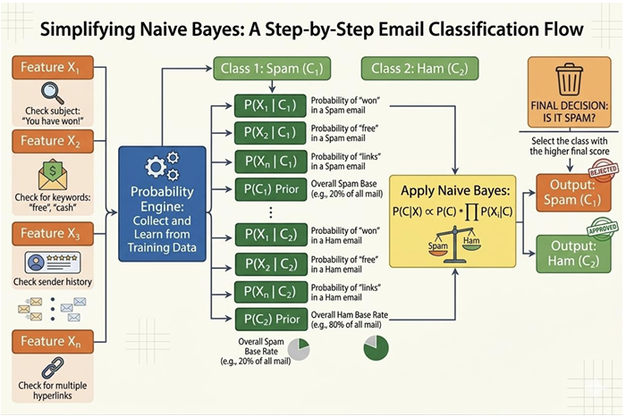

Naïve Bayes Classification for Text and Categorical Data using Prior and Posterior Probabilities
Naive Bayes is a supervised probabilistic learning algorithm widely used for text classification tasks such as spam and ham message detection. The model is based on Bayes’ theorem, which estimates the posterior probability of a class given observed features. A key assumption of Naive Bayes is that features are conditionally independent given the class label. While this assumption does not fully hold for natural language, the classifier remains effective due to the high dimensionality and sparse distribution of textual features.
1. Bayes’ Theorem
Bayes’ theorem is a fundamental probability rule that describes how to update the probability of a hypothesis based on new evidence. It forms the mathematical foundation of the Naive Bayes classifier. The theorem is expressed as:
where:
- P(C | X) represents the posterior probability of a message belonging to class C (spam or ham) given the feature set X.
- P(X | C) is the likelihood of observing the features under class C.
- P(C) denotes the prior probability of the class.
- P(X) is the marginal likelihood of the features.
Prior Probability
The prior probability P(C) represents the probability of a class occurring before observing any features. It is calculated from the training data as:
For example, in a spam detection dataset where 40% are spam and 60% are ham:
- P(Spam) = 0.4
- P(Ham) = 0.6
Likelihood
The likelihood P(X | C) represents the probability of observing a feature vector X when the class is C. In text classification, this corresponds to the probability of words appearing in messages belonging to a particular class.
Posterior Probability
The posterior probability P(C | X) is the updated probability of a class after considering the observed features. The classifier computes this value for each class and selects the class with the highest posterior probability:
where C* is the predicted class. This approach is also referred to as Maximum A Posteriori (MAP) estimation, which chooses the class that maximizes the posterior probability:
The classifier therefore only needs to compute the product of the likelihood and prior probability for each class and select the class with the highest value.
2. Naive Independence Assumption
The term "Naive" refers to the simplifying assumption that all features are conditionally independent given the class label. This means that the presence or absence of one feature does not influence another feature when the class is known.
If the feature vector is represented as:
then the likelihood can be simplified as:
This assumption significantly reduces computational complexity and allows the algorithm to work efficiently with large datasets. Instead of estimating the joint probability of all features together, which would require an exponentially large number of parameters, the model only needs to estimate the individual conditional probabilities of each feature. This makes Naive Bayes especially effective for high-dimensional data such as text.
3. Naive Bayes Classifier
The Naive Bayes classifier applies Bayes’ theorem together with the naive independence assumption to classify new instances. Given an input feature vector X = (x₁, x₂, …, xₙ), the classifier computes the posterior probability for each class and assigns the label of the class with the highest posterior probability.
The classification rule is:
To avoid numerical underflow when dealing with very small probability values, logarithms are applied:
While the underlying principle remains consistent, different variants of the classifier are used depending on the nature of the data distribution and feature representation.
Multinomial Naive Bayes Multinomial Naive Bayes is designed for discrete data, especially word counts or term frequencies. It is widely used in text classification tasks such as spam detection and document classification. Text is typically converted into numerical features using methods like bag-of-words or TF-IDF.
Gaussian Naive Bayes Gaussian Naive Bayes is used when features are continuous numerical values assumed to follow a normal distribution. The likelihood is calculated using the Gaussian probability density function, using the mean and variance of the feature values for each class to measure how closely a value fits the distribution of that class.
Bernoulli Naive Bayes Bernoulli Naive Bayes works with binary features, where each feature indicates whether a word is present (1) or absent (0) in a document. It is useful when the presence of certain keywords is more important than their frequency.
Categorical Naive Bayes Categorical Naive Bayes is used when features are categorical variables with multiple possible values, such as colour, weather, or device type. Probabilities are calculated based on the frequency of each category within a class.
4. Feature Transformation and Modeling
Before applying the Naive Bayes classifier, raw data must be transformed into a suitable numerical representation depending on the nature of the features.
Categorical Features Categorical features take discrete values from a fixed set (e.g., colour: red, blue, green). The probability of each category given a class is estimated from training data:
Laplace smoothing is applied to avoid zero probabilities for unseen category values:
Continuous Features (Gaussian NB) When features are continuous, Gaussian Naive Bayes assumes values follow a normal distribution within each class. The mean (μ) and variance (σ²) are estimated from training data for each feature and class. The probability density function computes the likelihood:
Frequency-Based Features Textual data is transformed into numerical vectors using Term Frequency–Inverse Document Frequency (TF-IDF) weighting. TF-IDF enhances the importance of words that are frequent within a document but infrequent across the entire corpus, improving the discriminative ability of the feature space. For classification, the Multinomial Naive Bayes algorithm is well suited for word-based features and TF-IDF representations.
In text classification tasks, documents are represented using the bag-of-words model, where word occurrences form the basis of feature extraction and the order of words is ignored. For example, a message can be represented as shown in the table below:
| Word | Frequency |
|---|---|
| free | 2 |
| win | 1 |
| offer | 1 |
To improve feature quality and reduce redundancy, Natural Language Processing (NLP) techniques are applied. These include:
- Text Normalization: Standardizing text format.
- Stop Words Removal: Filtering out common words (e.g., "is", "the") that carry little semantic value.
- Stemming and Lemmatization: Reducing words to their base or root forms.
- Part-of-Speech (POS) Tagging: Identifying grammatical roles to preserve semantic correctness while reducing dimensionality.
5. Naïve Bayes Classification Workflow

Figure 1: Workflow of Naïve Bayes classification for spam–ham email prediction
The figure 1 illustrates the workflow of the Naïve Bayes classifier used for email classification. In this process, an email is first analyzed by extracting several features such as the presence of certain keywords in the subject, specific terms in the message body, or patterns in the sender information. These extracted features represent the input variables that help characterize the email. Using training data, the classifier estimates the probabilities of these features occurring in each class, namely spam and ham. It also computes the prior probabilities of each class, which represent how frequently spam and ham emails appear in the dataset.
Once these probabilities are learned, the Naïve Bayes algorithm applies Bayes’ theorem to compute the posterior probability of the email belonging to each class given the observed features. This involves combining the prior probability of the class with the conditional probabilities of the features. The classifier then compares the resulting probability scores for the spam and ham classes and assigns the email to the class with the higher probability. This probabilistic approach enables efficient and accurate classification of emails into spam or legitimate messages.
6. Algorithm
Step 1: Apply Bayes’ Theorem:
Step 2: Apply Naive Independence Assumption:
Step 3: During Training, calculate from data:
Prior Probability:
P(Class = c) =Count of samples in class cTotal samplesConditional Probability (for each feature):
For categorical features:
P(xi = v | Class = c) =Count(class c where feature j = v)Count(class c samples)For continuous features (Gaussian NB): Calculate mean (μ) and variance (σ²) of feature j for each class:
P(xi | Class = c) =× exp (1√2πσ2)−(xi − μ)22σ2
Step 4: Add Laplace Smoothing (to handle zero probabilities):
Step 5: For Prediction:
For each class c, calculate:
Score(c) = P(Class = c) ×P(xi | Class = c)n∏i=1Use log to avoid underflow:
Log_Score(c) = log(P(Class = c)) +log(P(xi | Class = c))n∑i=1Predict class with highest score.
7. Applications: Text Classification and NLP
Naive Bayes is particularly well suited for text classification problems. The high-dimensional and sparse nature of text data aligns naturally with the independence assumption, making the classifier both efficient and effective for NLP tasks.
Spam Detection Naive Bayes is one of the earliest and most effective methods for email spam detection. Given a set of words in an email, the classifier computes the probability that the message belongs to the spam or ham class. Words such as "free", "offer", and "win" tend to have high probability under the spam class, while neutral vocabulary is more characteristic of ham messages. The model learns these probabilities from labelled training data and applies them to new, unseen messages.
Sentiment Analysis In sentiment analysis, the goal is to determine whether a piece of text (such as a product review or a tweet) expresses a positive, negative, or neutral opinion. Naive Bayes can be trained on labelled sentiment data to estimate the likelihood of positive or negative words under each class. Due to its fast training speed, it is widely used as a baseline model for sentiment classification tasks.
Document Classification Naive Bayes is also applied to categorize documents into predefined topics or genres, such as news articles into sports, politics, and technology. The bag-of-words or TF-IDF representation of documents is used as the feature set. The classifier assigns a document to the category with the highest posterior probability, and performs well when documents have clearly distinguishable vocabulary across categories.
In all these text-based applications, NLP preprocessing techniques such as stop word removal, stemming, and TF-IDF weighting further enhance the performance of the Naive Bayes classifier by reducing noise and emphasizing discriminative features.
8. Merits of Naive Bayes
- Simple and Computationally Efficient: The algorithm requires only a single pass through the training data to estimate probabilities, making training and prediction extremely fast.
- Works Well with High-Dimensional Data: Suitable when the number of features is very large, such as in text classification with thousands of words. The independence assumption prevents the curse of dimensionality.
- Performs Well with Small Datasets: Unlike many other machine learning algorithms, Naive Bayes can yield good results even with a small amount of training data, as it only requires individual feature probabilities.
9. Demerits of Naive Bayes
- Strong Independence Assumption: Naive Bayes assumes all features are conditionally independent given the class. In practice this rarely holds — words like "bank" and "loan" in a document are related, yet the model treats them as independent.
- Performance Decreases When Features Are Highly Correlated: When features are strongly correlated, the independence assumption is violated, leading to biased probability estimates and reduced classification accuracy.
- Limited Ability to Capture Complex Relationships: Naive Bayes is a simple linear classifier and cannot model non-linear patterns or complex feature interactions. More sophisticated algorithms such as decision trees, random forests, or neural networks may outperform it on complex datasets.
Overall, the Naive Bayes classifier, combined with NLP-based feature normalization and TF-IDF representation, provides an efficient and robust solution for spam and ham message classification.